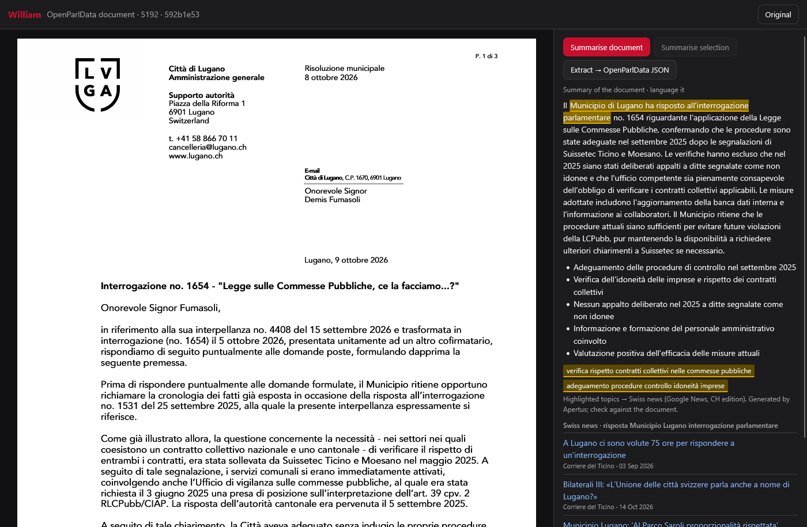
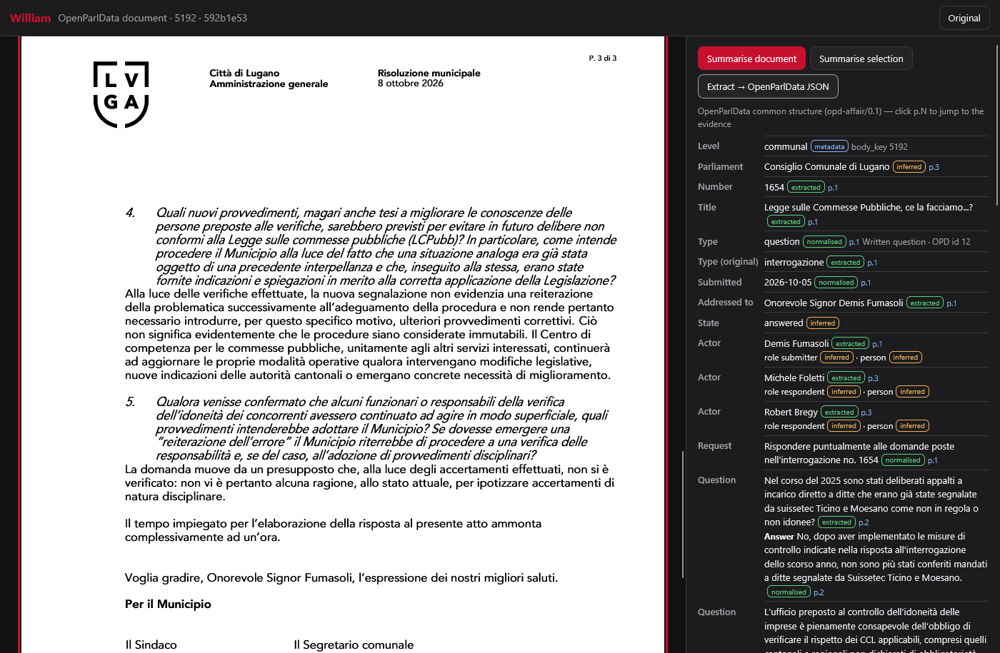
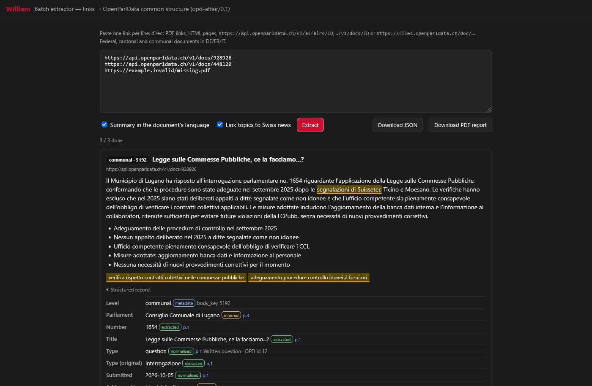
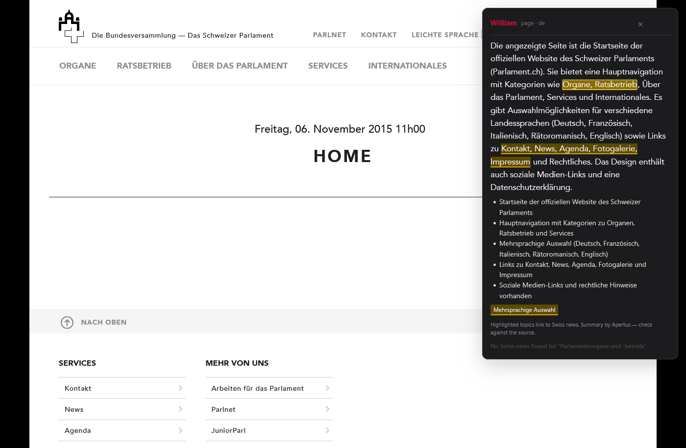

Swiss parliaments publish their affairs (motions, postulates, interpellations, questions, reports) as PDFs, in
German, French or Italian, at three levels (federal, 26 cantons, communes), each with its own layout and vocabulary.
William turns such a document into one common, versioned structure, opd-affair/0.1, with
Apertus-v1.5-70B. Every value carries the page and a verbatim quote it was read from. A value whose quote cannot
be found in the document is removed. A classification without a quote is kept, but marked inferred.
The same pipeline ships in three forms: a Firefox extension that opens parliamentary PDFs in its own viewer, summarises the document or a selection in the document's language and links its political topics to Swiss news; a batch page (many links → JSON + PDF report); and an HTTP API with a web page for production use.
News about the affair. Next to the document, William shows the Swiss press coverage of the affair: the motion, question, vote or decision the document is about. Apertus names the political subjects of the document and writes a news query for each in the document's language. The subjects are highlighted in the summary, and clicking one lists the matching Swiss articles. For example, on a Lugano council answer to a parliamentary question, the reader gets the article “A Lugano ci sono volute 75 ore per rispondere a un'interrogazione”, about that same question.
On 14 OpenParlData documents (3 levels × DE/FR/IT, 14/14 processed), 154 values were verified against the
source text, 85 proposed values were rejected (80 of them had no quote at all) and 67 classifications were kept as
inferred. Headline insight: a common schema works for identity fields (number, title, original
type term, addressee, authors; core-field coverage 0.76). It does not work, from the PDF alone, for
procedure: 10 of 14 procedural states had no supporting quote, and no decision was verified in any document.
link (PDF · HTML · api.openparldata.ch/v1/docs|affairs/ID · files.openparldata.ch/doc/…)
──► fetch + text per page (pdf.js in the extension, pypdf in the API)
──► OPD hints: body_key → level (CHE / canton / BFS no.), OPD type and number of the parent affair
──► Apertus 70B (shared/prompts.json, william-prompts/0.2) ──► JSON, one {v, p, q} per field
──► verifier: quote search on page p (normalised; space-insensitive fallback) ──► char span
dates: day + month + year must be in the quote · numbers must be in the quote
vocabulary fields: legal term or removed; no quote ──► status "inferred"
type_original ──► fixed DE/FR/IT term lookup overrides the model's type
──► opd-affair/0.1 record + quality block (raw model output kept for offline re-verification)
──► summary in the document's language + topics ──► Google News RSS (CH edition) ──► inline highlights
src/extension/shared/{prompts,vocab}.json), read by
both the extension and the API.shared/core.js (extension) and
src/william/{verify,extract}.py (API). tests/parity.mjs rebuilds the records of all 14
stored documents in both and finds 0 differences.webRequest listener redirects PDF
responses into the viewer (pdf.js with a selectable text layer; p.N evidence links jump to the page).
Right-click menus summarise any selection or page on any website in a floating panel.shared/minipdf.js, checked by parsing it back with pypdf in strict mode).src/william/api.py, FastAPI): /v1/extract, /v1/report,
/v1/summarize, /v1/translate, /v1/schema, /v1/vocab, plus a CLI.
It also serves the extension's batch page and viewer as plain web pages (/ext, /viewer),
with a fetch proxy and an Apertus proxy so the browser never sees the key.python -m william validate, POST /v1/validate): checks any finished
record against the schema, the provenance rules (page + quote for every extracted value) and the controlled
vocabularies; --source fetches the document again and re-checks every quote on its page. All 14 sample
records in data/sample/records/ pass.browser.storage.local; the API reads
LLM_API_KEY from its environment and sends no CORS headers.| Viewer: summary in the document's language, topics → Swiss news | Viewer: extracted record with p.N evidence |
|---|---|
 |
 |
| Batch page: many links → JSON + PDF report | In-page panel on a live parlament.ch page |
 |
 |
swiss-ai/Apertus-v1.5-70B through the CSCS OpenAI-compatible endpoint;
Apertus-v1.5-8B can be selected in the extension settings. LLM_NAME /
LLM_BASE_URL / LLM_API_KEY follow the judges' convention.src/extension/shared/prompts.json (william-prompts/0.2). The extraction
prompt lists the controlled vocabularies (affair types, actor roles, procedural states, decision outcomes,
relation types) and states that a quote is required for every value.data/sample/urls.txt lists 14 OpenParlData documents: federal (CHE ×4), cantonal (GE ×2, TI,
ZH) and communal (Bern 351, Zürich 261, Lausanne 5586 ×2, Lugano 5192 ×2), in German, French and Italian.tests/fixtures/
only for the offline tests; the stored Apertus outputs are in eval/.There is no manually checked gold set (a single-day build). We report three measurements that need no gold labels.
(a) Evidence verification (make eval, verifier v2, prompt v0.2):
| Level | Docs | Verified values | Inferred | Rejected | Verified share | Core-field coverage* |
|---|---|---|---|---|---|---|
| federal | 4 | 36 | 11 | 9 | 0.64 | 0.71 |
| cantonal | 4 | 37 | 16 | 7 | 0.62 | 0.88 |
| communal | 6 | 81 | 40 | 69 | 0.43 | 0.72 |
| all | 14 (14 processed) | 154 | 67 | 85 | 0.50 | 0.76 |
* share of {number, title, type, submission date, addressee, state} that are present. The weakest cell is communal FR (36 rejections), from one Lausanne PDF whose text layer has no space characters (“RéponsedelaMunicipalité…”).
(b) Ablations. “Verified” counts include OPD metadata values.
| Run | Verified | Rejected |
|---|---|---|
| prompt v0.1 + verifier v1 (12 docs; 2 were Fedlex-wall files, swapped out afterwards) | 73 | 112 |
prompt v0.2 (“q is REQUIRED…”) + punctuation-insensitive matching + vocabulary without quote → inferred (13 docs) | 132 | 72 |
| + space-insensitive fallback for broken text layers (same model output, re-verified offline; 13 docs) | 147 | 70 |
+ PDF header found after leading bytes: the Zürich 261 file has a newline before %PDF- and is now read (14 docs; one new live Apertus call) | 154 | 85 |
The first two rows differ in documents as well as in prompt, so they show the direction of the change, not a controlled comparison. The third row is controlled: identical model output, verifier change only. The last row adds the Zürich 261 document; the other 13 records are unchanged.
(c) Agreement with OpenParlData's own harmonized type (python -m william.evaluate crosscheck):
5/11 where both exist. The disagreements are informative:
document.type (docs/schema.md, Known gaps).I126.19 with the original term
Interpellazione is harmonized by OPD as question.Data-quality findings in OpenParlData itself. For at least two federal documents (e.g. doc 485241,
“FF 2013 1073”), the stored file and text are the Fedlex “please enable JavaScript” page, not the PDF;
William flags “source is listed as a PDF but the file is not a PDF” instead of extracting from it. OPD's
state_name_harmonized_id is filled for 278 of 326,334 affairs (0.09 %)
(/v1/affairs/group_by/states_harmonized, 16 Oct 2026).
Cross-parliamentary question: can the procedural state of an affair be read from its documents? OPD cannot
answer this today (0.09 % coverage), and our answer is mostly no: William proposed a state for 14/14 documents,
but 10 have no supporting quote (inferred) and the other 4 rest on weak quotes (a heading such as
“Postulat”). Only one document (Zürich 261, a committee motion) yielded a decision, “recommended accept”, and it too
had no verbatim basis. State and outcome should come from structured event data (OPD events /
votings), with documents as evidence, not as the source.
Extension checks. These ran end to end in real (headless) Firefox with Selenium
(tests/e2e_firefox.py) on the packaged extension, live against Apertus-70B: 19/19 checks passed.
Results and screenshots are in eval/e2e/.
| Case | Result |
|---|---|
| OpenParlData PDF link (Lugano, IT) | Auto-opened in the William viewer; pages rendered with a selectable text layer |
| Document summary | Written in Italian (“Il Municipio di Lugano ha risposto all'interrogazione parlamentare no. 1654…”) |
| Topic highlight → news | 5 Swiss articles listed, e.g. “A Lugano ci sono volute 75 ore per rispondere a un'interrogazione” |
| Selection summary | Button enables after a selection; summary in the document's language |
| Extraction | 20 rows, type question, verified share 0.579; p.N jumps to the page; JSON downloaded |
| Batch page | Links processed in parallel into records; JSON and PDF report downloaded |
| Popup and in-page panel on a live parlament.ch page | Summary panel shown with topic links |
Also checked: the live API in Docker (/v1/extract with summary + news, /v1/report, SSRF
refusal, no CORS); the offline suite (make test, 16 tests); JS/Python parity (0 differences);
web-ext lint (0 errors). The right-click menu itself is not covered by automation (Selenium cannot open
browser menus; the same code path was driven directly). Robustness built in: one stricter retry when the model's
JSON is cut off, normalised language codes with a stopword fallback, and progressively shorter news queries.
webRequest (PDF interception).make test and make eval (Docker, no GPU, no API key) reproduce every number in §5 from
the stored Apertus outputs in eval/sample_70b*.json and the page texts in tests/fixtures/.make sample re-runs the sample extraction live (needs LLM_API_KEY);
make validate checks the 14 sample records; make run starts the API and web page on port 8000; make extension zips the extension.document.type, affairs[] per document, and state / decisions taken
from OPD events.declarativeNetRequest for PDFs).Apache-2.0 (see the repository root). pdf.js (Apache-2.0) is bundled in src/extension/lib/ with its licence.
[1] OpenParlData.ch: open data from Swiss parliaments. API: https://api.openparldata.ch/v1 · documents: https://files.openparldata.ch
[2] Swiss AI Initiative. Apertus: a fully open, multilingual Swiss LLM. https://huggingface.co/swiss-ai